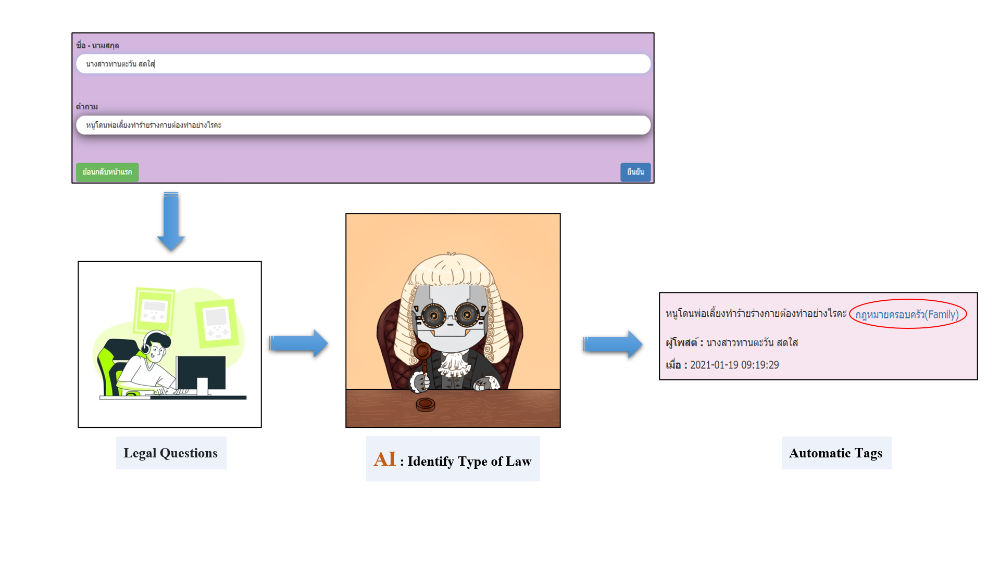

Welcome to My Web page!

เนื้อหาการเรียนรายวิชา
SC664401: Prototyping for Artificial Intelligence
and Machine Learning System
Abstract

Law are regulations for controlling people so that they behave in the same way,and there would be the peace in countries.
When everyone knew his rights, duties, and limits, he could do along the laws, there wouldn’t be the encroachment or the infraction against others’ rights.
At present, a large number of people in Thailand do not know the laws or understand the process of judgement.
When they had problems, they always asked for advices from Q&A board about laws on the internet and searched advices through Google or Search Engine instead of consulting lawyers directly.
When users asked many legislative problems on Q&A web board, these problems are not categorized.
So respondents will have difficult time answering the questions. Moreover, It will be hard for the people who want to study about other Q&A to find the topic they interested in.
We found that there were not any data set about Thai laws in the form of questions and answers which can be used in the development Machine Learning Model.
The only current dataset about Thai laws is the laws in Act of Parliament, which developed by PyThaiNLP team.
Hence, we would like to develop a data set in the form of questions and answers for language processing of Thai laws and developed the model for categorizing questions from webboards as the category of laws.
We collected questions and answers from webboards which reliably answered legislative problems from 6 websites on the internet.
We segment Thai words with Algorithm Conditional Random Fields, API servicing from the platform AI for Thai.
Finally, we use Classes Label categorizing laws along questions found in web boards and propagated Legal Thai Dataset. We then develop classification model with the developed dataset.
The Input of the model is texts or questions about laws, and the output is the probability of any questions were categorized in any categories of laws. Our model, LegalBERT – th accuracy is 94%.
The main benefit from this development is the dataset of questions and answers for language processing of Thai laws (Dataset).
They would be taken to develop continually for increasing the quantities of dataset so that the model would be more accurate.
It could reduce tasks of webboards and helped to categorize legislative questions orderly.
People could search interesting questions more easily. It could help respondents to answer questions more quickly.
Besides, the developer API could categorize Thai laws and the results were showed in the category names.
Project poster
รางวัลดาวรุ่งวิทยาศาสตร์รุ่นเยาว์ ประจำปีการศึกษา 2564 YRSS 2021 (YOUNG RISING STARS OF SCIENCE AWARD 2021)
รางวัลเหรียญเงินในสาขาวิทยาการคอมพิวเตอร์
The website template was borrowed from Michaël Gharbi.